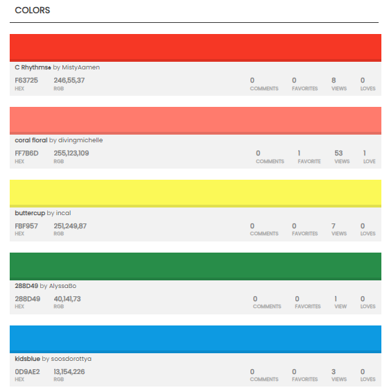

Color Schema

The website is called San Pedro Chamber of Commerce, I gave it this name because in the city where I live San Pedro is the name of an important and historical site and I thought it was appropriate because it represents that.
Facilitate the growth and sustainable development of local businesses, promoting a favorable business environment through services, advice, training and active collaboration with our members and the community.
To be the main entity that promotes business success in our region, recognized for its commitment to excellence, innovation and comprehensive support for companies, contributing to the economic and social progress of our community.
What types of events and activities should the chamber of commerce organize to benefit its
members?
What is the budget available for event planning and how will funds be obtained?
How will we promote and spread the word about events to members and the community?
How can we support local businesses through services, advice and training?
What resources and experts are available to offer advice to member companies?
What are the key metrics to evaluate success in supporting local businesses?
How will we encourage local businesses to join the chamber of commerce and be active members?
What specific benefits will we offer chamber members?
What will be the membership requirements and associated fees?
How do we plan to contribute to regional economic development through the chamber of commerce?
What economic sectors will be our main areas of focus?
How will we measure the economic impact of our initiatives?
The fonts I chose for my website are:
and I chose them because:
-Both fonts are designed with excellent readability in mind, ensuring that web page content is easy
for
visitors to read. The clarity of the letters and the good separation between characters make the
text
comfortable to read.
-They have a modern and clean look, which makes them suitable for this web projects. They are
versatile
and adapt well to different styles and themes.
-They are widely supported across web browsers and devices, ensuring your content is displayed
consistently across a variety of platforms.